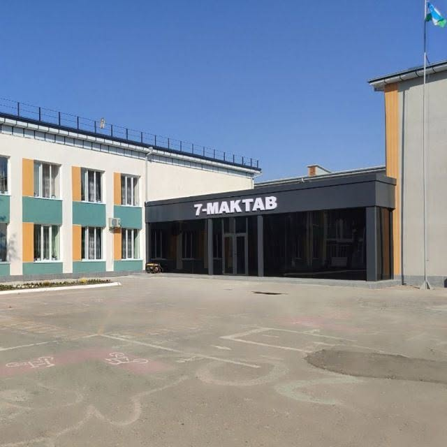

Kelajak avlod kamoloti yo'lida sifatli ta'lim
Bekobod shahri 7-maktabi — o'quvchilarga nafaqat fan asoslarini chuqur o'rgatuvchi, balki ularda mustaqil fikrlash, axloqiy fazilatlar va hayotiy ko'nikmalarni shakllantiruvchi ibratli ta'lim dargohidir.
Maktabimizda 1,200 dan ortiq yoshlar tahsil olmoqda. Ularga 84 nafar o'z kasbiga sadoqatli, yuqori malakali ustozlar dars beradi. Bizning ustuvor maqsadimiz — har bir bolaning tabiatidagi noyob qobiliyatni o'z vaqtida payqash va uning orzularini ro'yobga chiqarishga ko'maklashishdir.

Bizning maqsad va qadriyatlarimiz
Biz har bir o'quvchining shaxsiyatini hurmat qilamiz va ularni komil inson bo'lib voyaga yetishiga hissa qo'shamiz.
Darsliklar bilan cheklanmay, nazariyani amaliy laboratoriya va loyihalar orqali mustahkamlash.
Kattalarga hurmat, tengdoshlarga mehr-oqibat, halollik va milliy qadriyatlarga sodiqlik.
Har bir bolaning qiziqishiga qarab aniq fanlar, tillar, san'at yoki sportga yo'naltirish.
O'quvchilar o'zini erkin, qulay va himoyalangan his qiladigan mehmondo'st maktab jamoasi.
Maktabimizdagi zamonaviy sharoitlar
O'quvchilarimiz maroq bilan bilim olishi uchun yaratilgan qulayliklar.
Fan laboratoriyalari
Fizika, kimyo va biologiya fanlaridan o'quvchilar bevosita tajribalar o'tkazib, fan qonuniyatlarini amalda o'rganadilar.
IT va Xorijiy tillar
Bugungi kun talablariga mos zamonaviy kompyuter sinflari va chet tillarini chuqurlashtirib o'qitish to'garaklari.
Kutubxona va Sport
O'quvchilarning intellektual va jismoniy salomatligini uyg'un rivojlantirishga qaratilgan infratuzilma.
Darsdan tashqari qiziqarli maktab hayoti
Maktabimizda darsdan so'ng ham hayot qaynaydi — har bir bola o'z qiziqishiga mos to'garak topa oladi.
O'quvchilar o'rtasida har haftalik qizg'in intellektual bellashuvlar, tezkor fikrlash va bilimlar sinovi.
Adabiyot kechalari, kitob taqdimotlari, she'rxonlik musobaqalari va iqtidorli yosh shoirlar to'garagi.
Futbol, voleybol, basketbol, stol tennisi va shaxmat bo'yicha muntazam mashg'ulotlar va musobaqalar.
Nega ota-onalar 7-maktabni tanlaydilar?
Farzandingizning porloq kelajagi uchun eng to'g'ri tanlov.
Pedagoglarimizning aksariyati oliy va birinchi toifaga ega, ko'p yillik tajribali mutaxassislar hamda innovatsion metodika ustozlaridir.
Bitiruvchilarimiz mamlakatimizning va nufuzli xorijiy universitetlarning davlat grantlari hamda shartnoma asosidagi talabalariga aylanmoqdalar.
Bizda orqada qoluvchi o'quvchi yo'q — har bir o'quvchi bilan qo'shimcha mashg'ulotlar va psixologik qo'llab-quvvatlash tizimli yo'lga qo'yilgan.
Kuzatuv kameralari, doimiy qorovullik xizmati, toza va shinam oshxona, ozoda sinfxonalar o'quvchilar xavfsizligini to'liq ta'minlaydi.
Farzandingizning davomati va baholari real vaqt rejimida eMaktab tizimida aks etadi, ustozlar bilan muntazam fikr almashish imkoniyati mavjud.